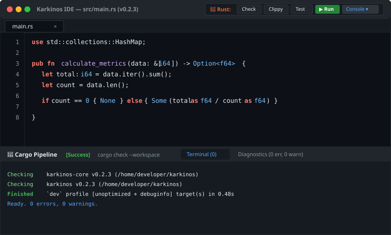

Karkinos is the lightweight, lightning-fast development environment engineered specifically for the Rust ecosystem. Zero Electron bloat, instantaneous startup, native Cargo pipelines, deep rust-analyzer integration, interactive DAP debugging, and Open VSX marketplace support.
cargo install --git https://github.com/rodrigoSaavedra140/Text-Editor

No multi-gigabyte runtimes. Just pure Rust performance, compiler ergonomics, and zero distractions.
Trigger cargo check (F7), cargo clippy, cargo test, and cargo run (F5) directly from the upper-right toolbar. Jump instantly to compilation errors with click-to-file navigation.
Press Ctrl+. or Alt+Enter to trigger rust-analyzer assists. Auto-import missing modules, complete match arms, and fill struct definitions with transactional undo.
Read complex Rust with ease. Automatic inlay hints render compiler-inferred types across iterator chains and parameter names as subtle, non-intrusive badges right inside the code.
Set visual breakpoints (F9), inspect the call stack, view live local variables, and step through instructions (F10/F11) using the native Debug Adapter Protocol engine.
Safely rename variables, structs, and traits across your entire workspace using F2. Powered by compiler symbol resolution with zero accidental string collisions.
Search and download extensions and themes directly from the Open VSX registry. Fully open ecosystem with complete install/uninstall package management.
Full-featured cross-platform pseudo-terminal powered by portable-pty and vt100. Native bash, zsh, and PowerShell with ANSI TrueColor rendering, tab completion, and process signals (Ctrl+C, Ctrl+D) inside the bottom dock panel.
Engineered with sub-millisecond line layout caching, atomic dirty tracking, memoized inlay hints, and exponential smooth scrolling. Delivers 120+ FPS during intense typing and true 0.0% CPU usage in idle repose.
Engineered with Ropey B-Tree data structures and hardware-accelerated GPU graphics.
| Metric | Karkinos IDE | VS Code | RustRover |
|---|---|---|---|
| Cold Startup Time | < 50 ms | ~ 2.4 s | ~ 8.5 s |
| Buffer Initialization (10k lines) | 2.32 ms | ~ 180 ms | ~ 650 ms |
| Buffer Random Edit Latency | 430 ns / edit (2.32M ops/s) | > 1.2 µs / edit | > 3.5 µs / edit |
| Undo Snapshot Creation (CoW) | 14.01 ns (O(1) B-Tree share) | Clone full text | Clone object tree |
| Tree-sitter Rust AST Parse | 185,980 lines / sec | Worker thread | Heavy PSI indexing |
| Myers Git Diff (10k lines, 20 hunks) | 3.20 ms | ~ 45 ms | ~ 120 ms |
| Idle Memory Footprint | ~ 42 MB | ~ 520 MB | ~ 1,800 MB |
| Idle CPU Usage (with Terminal) | 0.0% (Event-driven wake) | 0.8% - 2.5% | 1.5% - 4.0% |
| Runtime Architecture | Pure Rust + GPU | Electron + Node.js | Java / JVM |
| Cargo Tooling Integration | Native Embedded Pipeline | Plugin dependent | Integrated |
| License | BSL-1.1 Open Source | Proprietary Binary | Commercial Subscription |
Instant download. Native binaries for Windows 10, Windows 11, and Linux. No telemetry, no bloat.
Native portable executable (karkinos.exe) with silent subsystem execution (zero console popups). Extract and run on Windows 10 & 11.
Standalone portable binary package. Extract and run instantly on Ubuntu, Debian, Fedora, Arch, and any modern Linux.
Download for Linux (v0.2.39)Build and install locally using the standard Rust toolchain on any OS:
git clone https://github.com/rodrigoSaavedra140/Text-Editor.git
cd Text-Editor
cargo build --release
# Windows: ./target/release/karkinos.exe
# Linux: ./target/release/karkinos